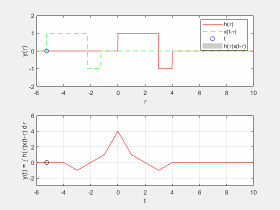

Practica 4 Convolucion y Correlacion
UNIDAD PROFESIONAL INTERDISCILIPINARIA EN INGENIERIA Y TECNOLOGIAS AVANZADAS
Integrantes:
Acosta Garcia Abraham
Trejo Merlin Ivan
Vazquez Cruz Rodrigo
Contents
Objetivos
1.-Conocer métodos básicos de integración numérica
2.-Manipulación de instrucciones en MATLAB
3.-Simular convoluciones y correlaciones de señales continuas
Introducción
En los siguientes ejemplos se va a desarrollar diferentes tipos de integración numérica propuestos por el equipo. Para esta demostración el equipo decidido tomar la $ Y los intervalos de integración serán de a .
Regla del trapecio (n=1)
Este método de integración se le conoce como la regla del trapecio por el polígono elegido para poder aproximarnos a la integral propuesta. Esto se aprecia en la sig \href{fig:my_label}{ figura(trapecio)} n = 1. \newline Para poder realizar la aproximación con la regla del trapecio se utiliza la siguiente expresión:
Donde:
Si ahora sustituimos esta fórmula con los datos que tenemos de nuestra f(x) tenemos lo siguien-te
La regla del trapecio entonces nos dice que:
Regla de Simpson (n=2)
Por la tanto tenemos:
Regla de tres octavos de Simpson (n=3)
Entonces:
Desarrollo
Ejercicio 1
Para el PR04 reporte la grafica de la simulación númerica de la convolución y compare con el resultado análitico que obtuvo para el problema 1, esto es, su práctica tendrá que incluir una llamada a la funciónn convconm y posteriormente se tendrá que mostrar (mediante el Publish) la gráfica tanto de las señales invlucradas como el resultado de la convolución, y en esta última gráficara su resultado analitico, se tendrá que incluir el resultado analitico. Investigue como crear un gif e inserte la animación.
% Funciones x = @(t) 1.*(t>=0 & t<1); h = @(t) (1-t).*(t>=0&t<1) + (t-1).*(t>=1&t<2); g = @(t) (t - (t.^2)/2).*(t>=0&t<1) + (t.^2 - 3*t + 5/2).*(t>=1&t<2) + ((- t.^2 + 4*t - 3)/2).*(t>=2&t<3); % Variables para este caso nameGif = 'Convolucion1.gif'; minT = -1; maxT = 4; tMin = -1.5; tMax = 4.5; yMin = -0.5; yMax = 1.5; convYmin = -0.2; convYmax = 1; % Llamado a funcion convconm(1, x, h, g, nameGif, minT, maxT, tMin, tMax, yMin, yMax, convYmin, convYmax)
La animación se muestra a continuacion
Ejercicio 2
Para el PR04 reporte la grafica de la simulación númerica de la convolución y compare con el resultado análitico que obtuvo para el problema 3, esto es, su práctica tendrá que incluir una llamada a la función convconm y posteriormente se tendrá que mostrar (mediante el Publish) la gráfica tanto de las señales invlucradas como el resultado de la convolución, y en esta última gráficara su resultado analitico, se tendrá que incluir el resultado analitico. Investigue como crear un gif e inserte la animación.
% Funciones x = @(t) (t).*(t>=0 & t<1) + (1).*(t>=1 & t<2); h = @(t) 1*(t>=1&t<3); g = @(t) (((t - 1).^2)/2).*(t>=1&t<2) + (t - 3/2).*(t>=2&t<3) + (- (t.^2)/2 + 3*t - 3).*(t>=3&t<4) + (5 - t).*(t>=4 & t<5); % Variables para este caso nameGif = 'Convolucion2.gif'; minT = 0; maxT = 6; tMin = -1.5; tMax = 6; yMin = -0.5; yMax = 1.5; convYmin = -0.2; convYmax = 3; % Llamado a funcion convconm(2, x, h, g, nameGif, minT, maxT, tMin, tMax, yMin, yMax, convYmin, convYmax)
La animación se muestra a continuacion
Ejercicio 3
Para el PR06 reporte la grafica de la simulación númerica de la correalción y compare con el resultado análitico que obtuvo para el problema e), esto es, su práctica tendrá que incluir una llamada a la funciónn convconm y posteriormente se tendrá que mostrar (mediante el Publish) la gráfica tanto de las señales involucradas como el resultado de su correlación, y en esta última graficara su resultado analitico, se tendrá que incluir el resultado analitico. Investigue como crear un gif e inserte la animación.
u = @(t) heaviside(t); h = @(t) u(t)-2*u(t-3)+u(t-4); x = @(t) -u(t)+2*u(t+3)-u(t+4); g = @(t) -(4+t).*(t>=-4&t<=-3) + (t+2).*(t>-3&t<=-1)+(3*t+4).*(t>-1&t<=0) + (4-3*t).*(t>0&t<=1) + (2-t).*(t>1&t<=3) + (t-4).*(t>3&t<=4); % Variables para este caso nameGif = 'Convolucion3.gif'; minT = -5.25; maxT = 5.75; tMin = -6; tMax = 10; yMin = -2; yMax = 2; convYmin = -3; convYmax = 6; % Llamado a funcion convconm(2, x, h, g, nameGif, minT, maxT, tMin, tMax, yMin, yMax, convYmin, convYmax)
La animación se muestra a continuacion

Ejercicio 4
Para el PR06 reporte la grafica de la simulación númerica de la correalción y compare con el resultado análitico que obtuvo para el problema f), esto es, su práctica tendrá que incluir una llamada a la funciónn convconm y posteriormente se tendrá que mostrar (mediante el Publish) la gráfica tanto de las señales involucradas como el resultado de su correlación, y en esta última graficara su resultado analitico, se tendrá que incluir el resultado analitico. Investigue como crear un gif e inserte la animación.
u = @(t) heaviside(t); h = @(t) u(t)-2*u(t-2)+u(t-4); x = @(t) -u(t)+2*u(t+3)-u(t+4); g = @(t) -(4+t).*(t>=-4&t<=-3) + (t+2).*(t>-3&t<=-2) + (3*t+6).*(t>-2&t<=-1) + (2-t).*(t>-1&t<=0) + (2-3*t).*(t>0&t<=1) + (-t).*(t>1&t<=2)+(t-4).*(t>2&t<=4); % Variables para este caso nameGif = 'Convolucion4.gif'; minT = -5.25; maxT = 5.75; tMin = -6; tMax = 6; yMin = -2; yMax = 2; convYmin = -3; convYmax = 6; % Llamado a funcion convconm(2, x, h, g, nameGif, minT, maxT, tMin, tMax, yMin, yMax, convYmin, convYmax)
La animación se muestra a continuacion
Referencias
1.-Oppenheim, A. V., Willsky, A. S., & Nawab, S. H. (1998). Señales y sistemas. Pearson Educación.
2.-Lathi, B. P., & Green, R. A. (2005). Linear systems and signals (Vol. 2). New York: Oxford University Press.
El código de esta publicación lo puedes encontrar en el siguiente < enlace>